El objeto Console se utiliza para la depuración de JavaScript.
En el JavaScript nativo, por defecto no hay un objeto Console; este es un objeto integrado proporcionado por el objeto anfitrión (es decir, el navegador). Se utiliza para acceder a la consola de depuración, y su efecto puede variar en diferentes navegadores.
Dos usos comunes del objeto Console:
- Mostrar mensajes de error en tiempo de ejecución del código de la página web.
- Proporciona una interfaz de línea de comandos para interactuar con el código de la página web.
Tomando el navegador Chrome como ejemplo, podemos abrir la ventana Console presionando F12 o Control+Shift+i (plataforma PC) / Alt+Command+i (plataforma Mac).
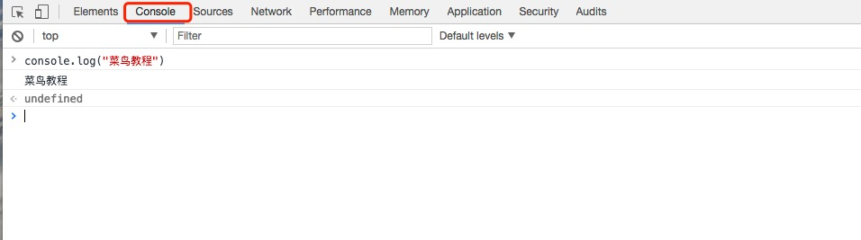
Métodos del objeto Console
| Método | Descripción | Ejemplo |
|---|---|---|
| assert() | El método assert acepta dos parámetros; el primero es una expresión y el segundo es una cadena. Solo cuando el primer parámetro es false, se emite el segundo parámetro; de lo contrario, no hay ningún resultado. |
// 实例 console.assert(true === false, "判断条件不成立") // Assertion failed: 判断条件不成立 |
| clear() | Limpia toda la salida de la consola actual y devuelve el cursor a la primera línea. | console.clear() |
| count() | Se utiliza para contar y muestra cuántas veces se ha llamado. |
(function() {
for (var i = 0; i < 5; i++) {
console.count('count');
}
})(); |
| error() | Al generar información, antepone una cruz roja al principio para indicar un error, y también muestra la pila donde ocurrió el error. | console.error("Error: %s (%i)", "Server is not responding",500) |
| group() | Se utiliza para agrupar la información mostrada, pudiendo plegar y desplegar la información. |
console.group('第一层');
console.group('第二层');
console.log('error');
console.error('error');
console.warn('error');
console.groupEnd();
console.groupEnd(); |
| groupCollapsed() | Es muy similar al método console.group; la única diferencia es que el contenido del grupo, en la primera visualización, está contraído (collapsed) en lugar de desplegado. |
console.groupCollapsed('第一层');
console.groupCollapsed('第二层');
console.log('error');
console.error('error');
console.warn('error');
console.groupEnd();
console.groupEnd();
|
| groupEnd() | Finaliza el grupo en línea |
console.group('Group One');
console.group('Group Two');
// some code
console.groupEnd(); // Group Two 结束
console.groupEnd(); // Group One 结束
|
| info() | Alias de console.log, genera información | console.info("runoob") |
| log() | Genera información | console.log("runoob") |
| table() | Convierte datos de tipos compuestos en una tabla para mostrarlos. |
var arr= [
{ num: "1"},
{ num: "2"},
{ num: "3" }
];
console.table(arr);
var obj= {
a:{ num: "1"},
b:{ num: "2"},
c:{ num: "3" }
};
console.table(obj);
|
| time() | Inicio del cronómetro |
console.time('计时器1');
for (var i = 0; i < 100; i++) {
for (var j = 0; j < 100; j++) {}
}
console.timeEnd('计时器1');
console.time('计时器2');
for (var i = 0; i < 1000; i++) {
for (var j = 0; j < 1000; j++) {}
}
console.timeEnd('计时器2');
|
| timeEnd() | Fin del cronómetro |
console.time('计时器1');
for (var i = 0; i < 100; i++) {
for (var j = 0; j < 100; j++) {}
}
console.timeEnd('计时器1');
console.time('计时器2');
for (var i = 0; i < 1000; i++) {
for (var j = 0; j < 1000; j++) {}
}
console.timeEnd('计时器2');
|
| trace() | Rastrea el proceso de llamada de una función. |
function d(a) {
console.trace();
return a;
}
function b(a) {
return c(a);
}
function c(a) {
return d(a);
}
var a = b('123');
|
| warn() | Genera mensajes de advertencia | console.warn("警告") |
Comandos de depuración comunes de Console
Ejemplo
Pruébalo »
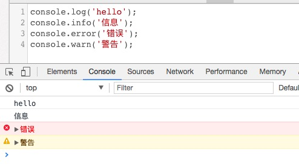
El más utilizado es console.log.
La consola mencionada anteriormente admite el formato de marcadores de posición de printf; los marcadores de posición compatibles son: carácter (%s), entero (%d o %i), número de punto flotante (%f) y objeto (%o):
| Marcador de posición | Función |
|---|---|
| %s | String |
| %d or %i | Entero |
| %f | Flotante |
| %o | DOM expandible |
| %O | Enumera las propiedades del DOM |
| %c | Da formato al string según los estilos CSS proporcionados |
Efecto:
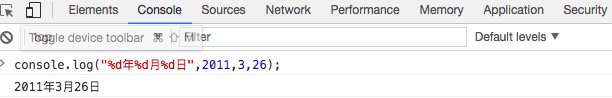
%o y %O se usan para generar objetos Object. Para objetos Object normales, no hay diferencia entre ambos, pero al imprimir nodos DOM la cosa cambia:
Ejemplo
Pruébalo »
Efecto:
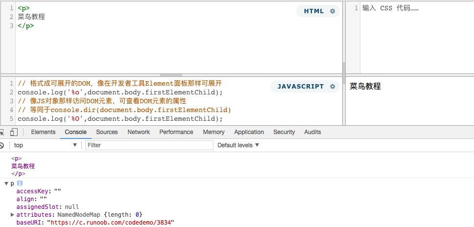
El marcador de posición %c es el más utilizado. Al usar %c, el parámetro posterior correspondiente debe ser una declaración CSS, que se utiliza para aplicar renderizado CSS al contenido de salida. Hay dos formas comunes de salida: estilo de texto y salida de imagen.
Salida de texto
Ejemplo
Pruébalo »
Efecto:
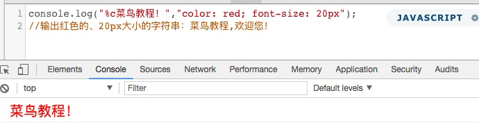
Además de texto normal, también se puede generar arte ASCII con forma de panel. Este arte ASCII se puede generar en línea:
El método aproximado: usar una herramienta en línea para generar el arte ASCII, luego copiarlo a Sublime, eliminar los saltos de línea al inicio de cada línea y reemplazarlos por \n. Al final, solo hay una línea de código, es decir, se garantiza que no haya saltos de línea; luego se coloca dentro del código console.log(""). Por supuesto, también se puede combinar con %c para lograr efectos más impresionantes (la salida de console no salta de línea por defecto).
Salida de imagen
Ejemplo
Pruébalo »
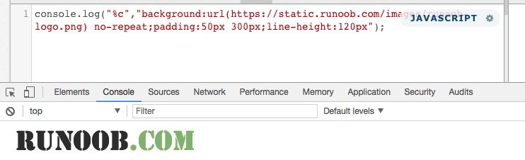
Dado que console no puede definir img, se utiliza una imagen de fondo en su lugar. Además, console no admite width y height; se usan espacios y font-size en su lugar; también se pueden usar padding y line-height en lugar del ancho y la altura.
3. Agrupación de información
Ejemplo
Pruébalo »
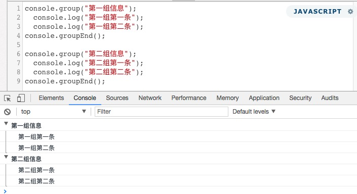
4. Ver la información del objeto
Ejemplo
Pruébalo »
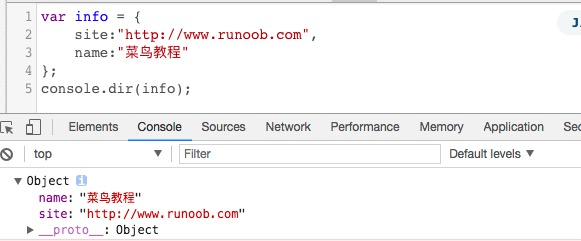
5. Mostrar el contenido de un nodo
console.dirxml() se utiliza para mostrar el código html/xml contenido en un nodo de la página web.
Ejemplo
Pruébalo »
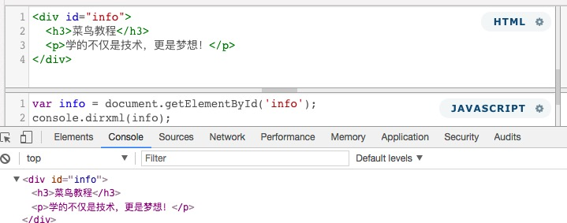
6. Determinar si una variable es verdadera
console.assert() se utiliza para determinar si una expresión o variable es verdadera. Si el resultado es falso, se muestra un mensaje correspondiente en la consola y se lanza una excepción.
Ejemplo
Pruébalo »
1 es un valor distinto de 0, por lo que es true; mientras que el segundo juicio es false, y se muestra un mensaje de error en la consola.
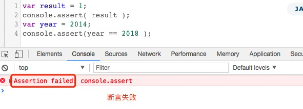
7. Rastrear la trayectoria de llamada de una función
console.trace() se utiliza para rastrear la trayectoria de llamada de una función.
Ejemplo
Pruébalo »
Información de salida de la consola:
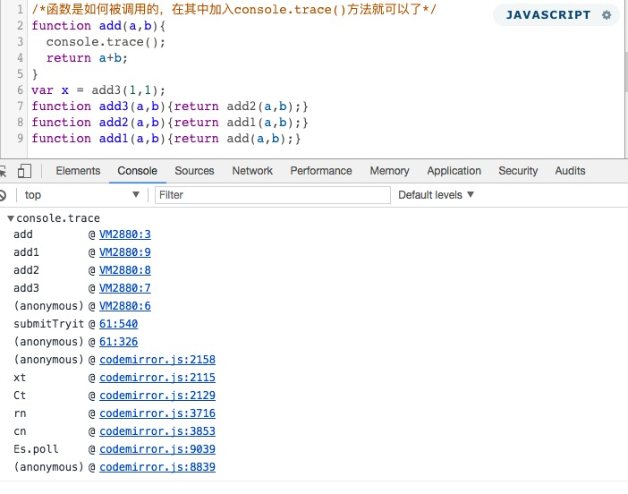
8. Funcionalidad de cronometraje
console.time() y console.timeEnd() se utilizan para mostrar el tiempo de ejecución del código.
Ejemplo
Pruébalo »
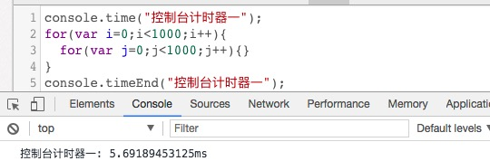
9. Análisis de rendimiento de console.profile()
El análisis de rendimiento (Profiler) consiste en analizar el tiempo de ejecución de cada parte del programa para encontrar el cuello de botella, y el método utilizado es console.profile().
Ejemplo
Pruébalo »
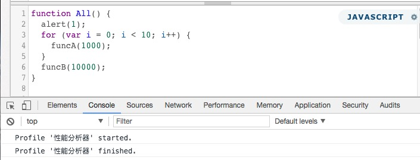